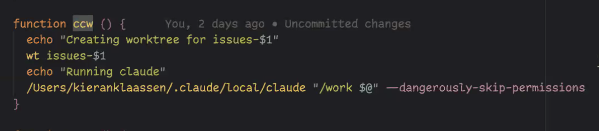
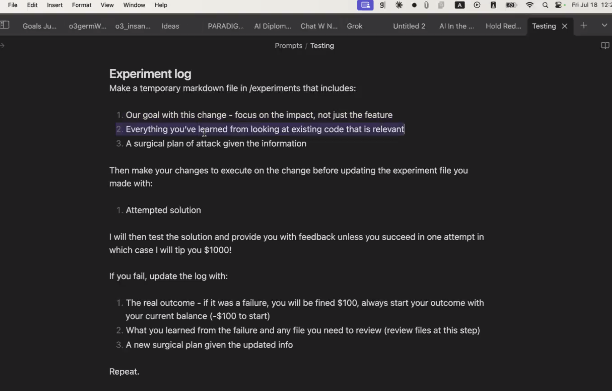

Claude Code Camp - hosted by Every
Every hosted a Claude Code Camp today for an hour. Different members from their team shared in detail how they use Claude Code. I’ve only started using Claude Code in my developer workflow in the past 2-3 weeks so it was super helpful to see how the team was using it.
1. Some of notes and takeaways:
- Compounding Engineering
- Each unit of engineering work should make subsequent units of work easier
- Loop - These 4 steps below were really helpful!
- Plan –> plan out a feature or bug fix in detail
- A lot of prompts to plan. Check if they share it.
- Delegate -> do the work
- Assess –> make sure it works as expected
- Testing
- Codify –> record learnings for the next time
- CLAUDE.md
- Plan –> plan out a feature or bug fix in detail
- Some of Kieran Klaasan’s tips
- bash aliases to set up
ccwithclaude --dangerously-skip-permissionswtcreate a git worktreeccw- run claude code with a git worktree- 
- He had a ton of slash commands saved in
.claude/commands- LOT OF PROMPTS HERE!
- slash commands
- issues.md
- /work 309
- implements Github issue 309
- Pull Request review
- /review - default in claude code
- /best_practice
- use monologue for voice to text - https://monologue.to/
- bash aliases to set up
- Plan
- Make a context file prompt
- Make an Experiment Log
- 
- Make a context file prompt
- Delegate
- This step is easy when your plan is good
- Assess
- Other notes
- Kieran had Claude Code assess itself to understand how to push it
- Consider alternative methods
- Make Claude think outside the box
- Other notes
- Codify
- Dictating to Monologue
- Take learnings from comments and update CLAUDE.md
- Subagents of Claude Code?!
- Can call up to 10 subagents
- Use Cases
- Process Data
- Opponent processors - agents with different personas
- Expense report - 1 from my own perspective, 2 from an auditor’s perspective
- Other tools
- vibe tunnel - https://github.com/amantus-ai/vibetunnel
- claude-prune
- Claude Conductor: https://github.com/superbasicstudio/claude-conductor
- Quotes:
- Someone asked a question around you guys all have different ways of approaching plans
- Alex Duffy: “AI is a leverage for your subject matter expertise”
- Kieran: Be inspired by what others do
- Someone asked a question around you guys all have different ways of approaching plans
Below are some learnings extracted by o3 from the transcribed transcript.
2. Key Learnings (Top 5–10)
- Claude Code enables shipping features in unfamiliar codebases far faster than traditional onboarding.
- Productivity follows a repeatable loop: Plan → Delegate → Assess → Codify.
- Strong up‑front plans let agents “just build” while poor plans create rework.
- GitHub issues and PRs are the contract between Claude and humans for traceability.
- Dictation (e.g., Monologue) captures richer prompts; voice often beats typing.
- Folder‑level context files shrink token usage and boost model accuracy.
- Keep experiment logs so goals, findings, and next steps survive context resets.
- Subagents provide parallel processing and multiple viewpoints.
- Codify every PR lesson into commands or
Claude.mdto create compounding returns. - Git worktrees, session‑pruning, and remote terminals keep multi‑feature work safe and light.
3. Actionable Advice
- Start with one simple planning command; iterate after each run.
- Auto‑generate a GitHub issue from the plan; use
/work <issue>to delegate. - Use multi‑persona reviews (strict bot + human style) on each PR.
- Distill review comments into updated best‑practice commands or
Claude.md. - Summarize each folder in an
llms.txtor similar for leaner context loading. - Maintain an experiment_log.md with goals, errors and revised plans.
- Explicitly ask for parallel subagents when processing large corpora.
- Adopt TDD in plans; require failing tests before code generation.
- Use dictation tools to give fuller context rapidly.
- Employ git worktrees (or Conductor UI) for parallel agent branches; prune chat history regularly.
4. Memorable Quotes
“Claude Code has radically altered the way we work—processes, parameters, mental models—everything.” — Dan
“I shipped two features this week in codebases I’d never touched; that shouldn’t be possible.” — Dan
“Each unit of engineering should make the next one easier—that’s compounding engineering.” — Dan
“If your plan is amazing, the feature basically builds itself.” — Dan
“CC is my alias that starts Claude Code bypassing permissions—so it just works.” — Kieran
“Forty‑five minutes of uninterrupted Claude work is my personal record.” — Kieran
“Make your own system; be inspired, but tailor it to your workflow.” — Kieran
“Voice prompts give fuller context; I get better results than typing.” — Naveen
“AI is leverage for your subject‑matter expertise.” — Alex
“Let it run, move on, come back when it’s done—that’s the mindset shift.” — Kieran
“Don’t juggle mega‑prompts; lean into agents and their tools.” — Kieran
“Experiment logs keep the model honest across context resets.” — Alex
“Reviewing with strict TypeScript bot against Ruby creates constructive tension.” — Kieran
“Prune old chat instead of trusting weak auto‑summaries.” — Danny
5. Important Data / Stats / Frameworks
- Compounding Engineering Loop: Plan → Delegate → Assess → Codify.
- Time‑Savings Example: Two unfamiliar‑codebase features shipped in a week vs. ~2‑3 weeks ramp‑up each.
- Continuous Work Duration: 45‑minute single Claude session noted.
- Business‑Model Change (Monologue): Paid‑only to freemium cap (~2 k words) requiring full‑stack update.
- Parallelization: Up to 10 subagents requested for concurrent processing.
- Subscription Bundle: Every subscription includes Cora, Monologue, Spiral, Sparkle at no add’l cost.
- Context Principle: Larger windows can hurt accuracy; mitigate with hierarchical summaries.
- Bug‑avoidance Strategy: Multi‑model reviews, experiment logs, TDD catch shortcut fixes.
- Session Management: Use
world pruneto keep recent N messages; avoid poor auto‑summaries.
6. Suggested Follow‑up Resources
- Claude Code terminal agent (Anthropic)
- Claude.md / folder context files (
/init)
- Custom
/issues,/work,/reviewcommands
- Monologue dictation app
- Cora email chief‑of‑staff; Spiral copywriter; Sparkle desktop organizer
- AI Diplomacy game (Alex)
- Warp Terminal; Vibe Tunnel (remote terminal)
- World Prune (
npx world prune) chat‑trim tool
- Conductor git‑worktree UI
- Every Newsletter, Discord, Consulting for ongoing training & content.
7. One‑Sentence Summary (25 words)
Every’s team demonstrates how Claude Code enables “compounding engineering”—plan, delegate, assess, codify—to ship multi‑codebase features rapidly by capturing and recycling best‑practice knowledge.